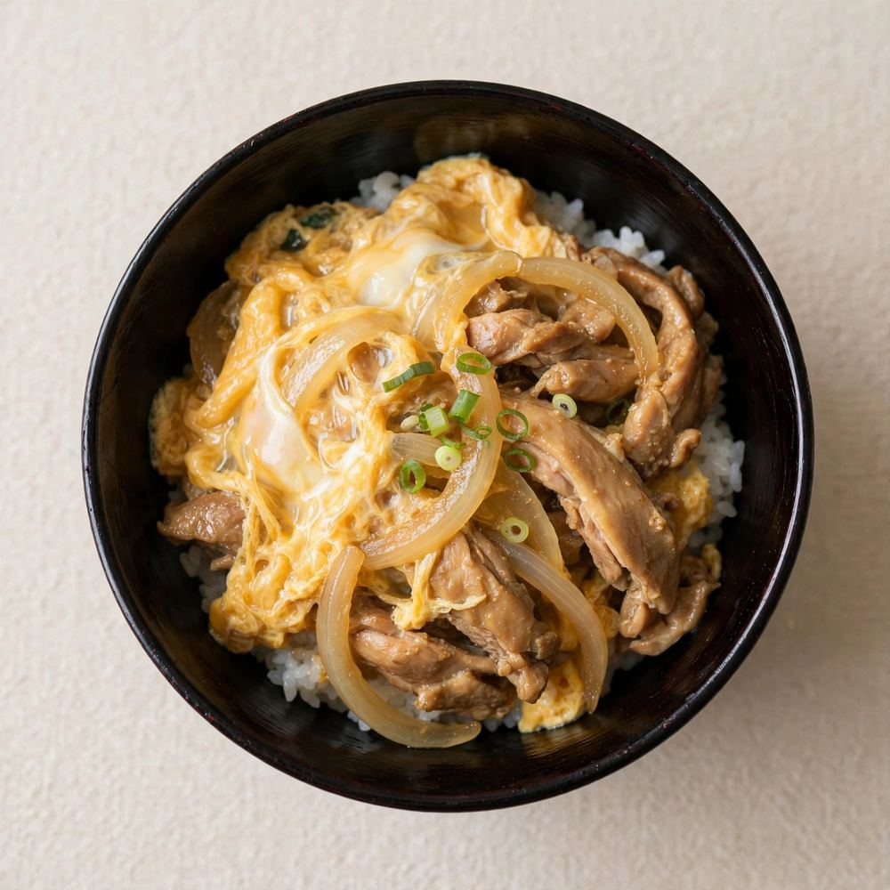

What is oyakodon?
A comforting rice bowl of chicken and egg simmered in sweet soy-dashi. The name literally means "parent and child bowl" — chicken (the parent) and egg (the child) cooked together. Yes, that's why your translator app said something weird.
What does it taste like?
Think of a savory-sweet egg drop over rice, with tender bites of chicken and soft onion. The sauce — soy sauce, mirin, and dashi stock — soaks into the rice. It's mild, warming, and one of the safest orders in Japan if you're unsure: no raw fish, nothing spicy, nothing unfamiliar in texture.
How to eat it
- Often comes with a small side of miso soup and pickles.
- Sprinkle shichimi (seven-spice) on top if you want a little heat.
- Eat it with chopsticks straight from the bowl, lifting the bowl closer to your mouth — totally normal in Japan.
Where to find it
Everywhere: soba/udon shops, casual teishoku (set meal) restaurants, department store food basements, and chains like Nakau and Yoshinoya. If a menu just says 親子丼 with no photo, now you know.
Allergens and dietary check: is oyakodon safe for you?
What a typical oyakodon contains. Recipes vary by shop, so use this to know what to ask, then confirm with the staff. Tap an allergen for its Japanese restaurant card.
| Allergen / diet | Contains? | Why |
|---|---|---|
| Egg | Yes | Softly set egg is half the dish. |
| Soy | Yes | Soy sauce in the simmering sauce. |
| Wheat / gluten | Yes | Soy sauce contains wheat. |
| Fish / dashi | Usually | The sauce is made with bonito dashi. |
| Sesame | Rarely | Not a usual ingredient. |
| Dairy | No | Not an ingredient. |
| Pork | No | Chicken; cooked in the same pans as katsudon. |
| Vegetarian? | No | Chicken, egg and fish stock. |
Several allergies? Build one card with our printable Japanese allergy card. Also see halal and vegetarian and vegan cards. This is travel information, not medical advice.
Common questions
Is the egg raw?
No. The beaten egg is poured over the simmering chicken and sets softly from the heat — like a soft scramble, not raw egg.
Does it contain fish?
The sauce uses dashi, which is usually made from bonito (fish) flakes. Strict vegetarians should ask — say "dashi wa haitte imasu ka?"
Why did my translator say "parent and child bowl"?
Because it translated the kanji literally: 親 (parent) + 子 (child) + 丼 (bowl).
Is oyakodon gluten-free?
Usually not, because the sauce is made with regular soy sauce, which contains wheat.
Is the egg in oyakodon raw?
It is cooked until softly set, often still runny in places. Ask for it well done with “よく火を通してください”.
Does oyakodon contain fish?
Usually. The simmering sauce is made with dashi, a bonito fish stock.
Related
Compare it with katsudon (fried pork cutlet and egg), or read about egg allergy in Japan.